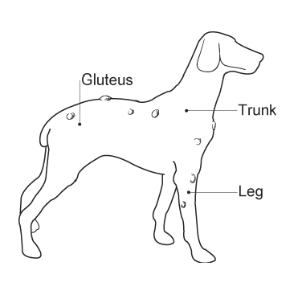

My favorite animal is a dog. Dog, (Canis lupus familiaris), domestic mammal of the family Canidae (order Carnivora). It is a subspecies of the gray wolf (Canis lupus) and is related to foxes and jackals. The dog is one of the two most ubiquitous and most popular domestic animals in the world (the cat is the other). For more than 12,000 years it has lived with humans as a hunting companion, protector, object of scorn or adoration, and friend.
Dog Food
Dog's eat the following such as:
corn
wheat
barley
rice
soy meal
beef
lamb
chicken
liver
Cleaning it Up
3 different ways to clean up dog poop:
Using poop bags: Turn the bag inside out, grab the poop with your covered hand, and turn the bag right side out.
Using a pooper scooper: Collect the poop in one go, toss it in a garbage can with a tied bag, or flush it.
Using plastic bags: Reuse plastic grocery bags or buy biodegradable bags, and pick up the poop with them.
Dogs and their Average Lifespan
Num.
Information
Dog Breed
Average Lifespan
1.
Labrador Retriever
10-12 years
2.
Golden Retriever
10-12 years
3.
German Shepherd
9-13 years
4.
Bulldog
8-10 years
5.
Beagle
10-15 years
6.
Poodle
10-18 years
7.
Boxer
10-12 years
8.
Dachshund
12-16 years
9.
Chihuahua
12-20 years
10.
Shih Tzu
10-18 years
Parts of a Dog

The parts of a dog are:
Gluetes:
Glutes, short for gluteal muscles, are a fun way to refer to the muscles in a dog's rear end. These muscles help dogs move their back legs and give them the power to run, jump, and play. Just like people, dogs use their glutes to stay active and strong.
Trunk:
Dogs don't exactly have trunks like elephants do, but they do have something similar called a "snout" or "muzzle." The snout is the long part of a dog's face that includes its nose and mouth. It's where dogs use their powerful sense of smell to sniff out all sorts of things, like yummy treats or the scent of their friends. Some dogs have longer snouts, like greyhounds, while others, like pugs, have shorter ones. No matter the length, a dog's snout is very important to them—it helps them explore their world and communicate with other dogs and people.
Leg:
A dog's leg is a special part of its body that helps it move around and play. Just like us, dogs have four legs, which they use for running, jumping, and even digging holes! Each leg has bones and muscles inside that make it strong and flexible.
Dog Adoption
If you are looking to adopt a dog; visit this website: